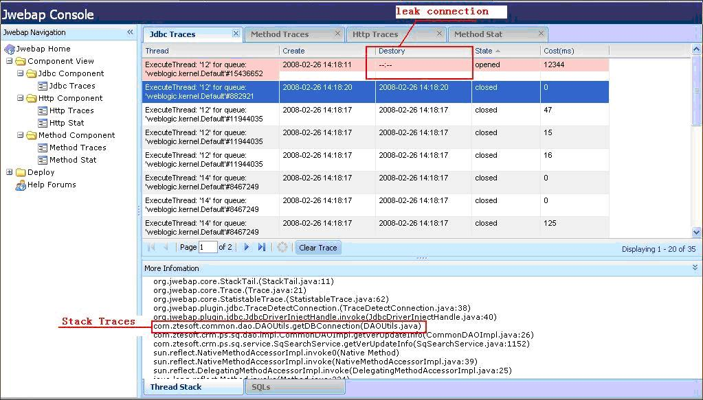
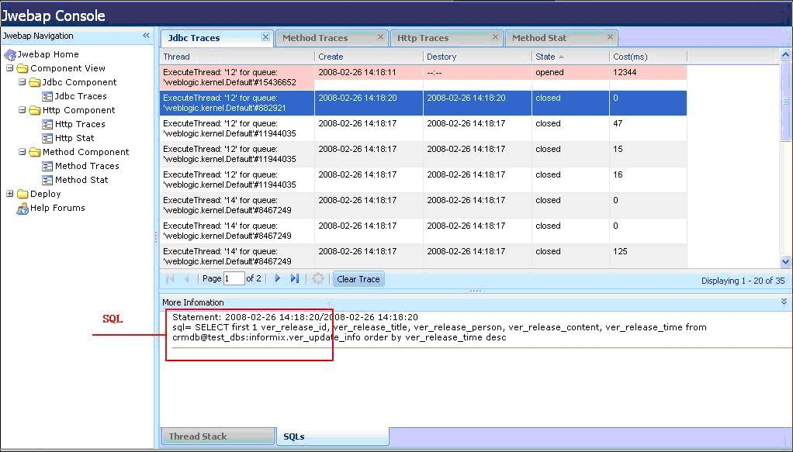
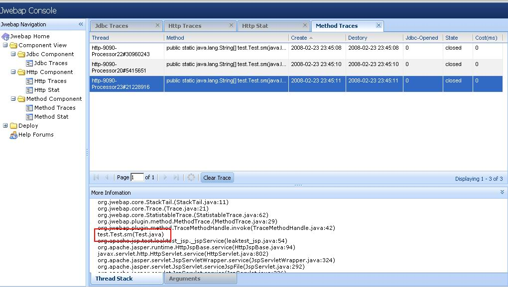
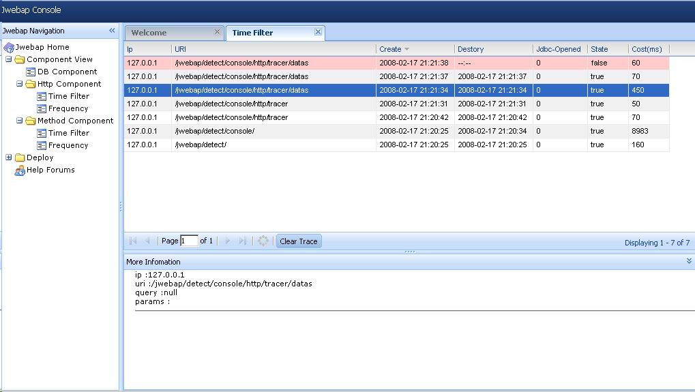

Jwebap is an open-source profiler tool for j2ee application. It is pure java-based and working on any computer with jdk 1.4 and up. It is also very easy to use because it only launches two files. Following are some of its features:
High Performance: Jwebap uses ASM (A Java bytecode engineering library) to inject class to achieve runtime information. The function is very low-overhead.
And now it is deployed in some China Telecom product systems with ten Millions users.
Pure Java: Most profilers use the JVMPI (Java Virtual Machine Profiling Interface) and some localized interface to monitor runtime details inside JVM. However, Jwebap is written entirely in java. It has no dependency on JVM or OS. So you can easily deploy it in any platform with very low-overhead.
Plugin Architecture: Jwebap is based on a plug-in architecture. Every trace analysis tool is a component. You can configure what component you should use. You can do timing filter on method execution, database statement, http request, etc. You can also view the leak connections, view the heap stack in execution, and count average execution time, over-time rate, etc. A component can be extended easily under the plug-in architecture, so Jwebap can implement more analysis components and reports in the future.
Easy To Use: When you use Jwebap, you will find it is easy to use. It has simple configure file, web console, and helpful analysis report.
You can download it here
And then change your web.xml:
Add context-param to locate jwebap.xml
<context-param> <param-name>jwebap-config</param-name> <param-value>/WEB-INF/jwebap.xml</param-value> </context-param>
Add Jwebap start listener at the first of all listeners
<listener> <listener-class>org.jwebap.startup.JwebapListener</listener-class> </listener>
Add http filter for HttpComponent
<filter> <filter-name>PageDetectFilter</filter-name> <filter-class>org.jwebap.plugin.tracer.http.DetectFilter</filter-class> <init-param> <param-name>excludeUrls</param-name> <param-value>/detect;/detect/*;*.js;*.jpg;*.htm;*.html;*.gif;*.png;*.css;*.swf</param-value> </init-param> </filter> <filter-mapping> <filter-name>PageDetectFilter</filter-name> <url-pattern>/*</url-pattern> </filter-mapping>
Add Servlet for Jwebap console
<servlet> <servlet-name>detect</servlet-name> <servlet-class>org.jwebap.ui.controler.JwebapServlet</servlet-class> </servlet> <servlet-mapping> <servlet-name>detect</servlet-name> <url-pattern>/detect/*</url-pattern> </servlet-mapping>
Lanunch tracer.jar in your application classes path(the default plugin in jwebap defined in jwebap.xml plugin-ref tag)
Now ,startup your application ! if you config correctly ,you can access JwebapServlet to see the Jwebap Console .
When you see the jwebap console ,that’s not enough . We have not any plugin in it . Next, we should deploy plugins in jwebap console.
Jwebap implement a default plugin ‘tracer’. It has been deployed default when jwebap startup. So,we can see it in jwebap console deployplugins. And then ,we should modify some parameter with this plugin.
Click ‘Tracer’ , and choice component which you will config, here has three component :
HttpComponent
<component name="HttpComponent" type="org.jwebap.plugin.http.HttpComponent"> <!--(ms) timings filter's over time --> <property name='trace-filter-active-time'>-1</property> <!-- max over-time trace size --> <property name='trace-max-size'>1000</property> </component>
MethodComponent
<component name="MethodComponent" type="org.jwebap.plugin.method.MethodComponent"> <property name='trace-filter-active-time'>-1</property> <property name='trace-max-size'>1000</property> <!-- package name and class name that monitored by MethodComponent, e.g.: 'test.*;test.Test' , divided by ';' --> <property name='detect-clazzs'>test.*;</property> </component>
JdbcComponent
<component name="JdbcComponent" type="org.jwebap.plugin.jdbc.JdbcComponent"> <property name='trace-filter-active-time'>-1</property> <property name='trace-max-size'>1300</property> <property name='connection-listener'><!--Connection Listener--> org.jwebap.plugin.http.ServletOpenedConnectionListener; org.jwebap.plugin.method.MethodOpenedConnectionListener </property> <!-- 1)Local datasource: set your ConnectionManagerClass, or the connection pool 's datasource. If you have more than one class ,divided by ';'. c3p0:com.mchange.v2.c3p0.ComboPooledDataSource; dbcp: org.apache.commons.dbcp.BasicDataSource Also,other class. Jwebap will inject driver-clazzs,and detect any connection and datasource object it's method renturn. Note: 'driver-clazzs =jdbc driver' is deprecated. Beacause of connection pool, set 'driver-clazzs =jdbc driver', jwebap will find out all connection is leaked. 2)JNDI datasource: If your application uses jndi datasource, you can set the class which manages connections in your application as driver,e.g.: 'com.china.telecom.ConnectionManager'. Else if you use spring to get jndi datasource ,you also can set driver-clazzs=org.springframework.jndi.JndiObjectFactoryBean. JdbcComponent will inject this class to proxy all connection the class's method return. --> <property name='driver-clazzs'></property> </component>
Jdbc Traces


Method Traces

Http Traces

Deploy
Please use
SourceForge forum
for reporting any bug, comment or suggestion.
Power by
{kind=link}
{kind=link}
{kind=link}
{kind=link}
{kind=link}